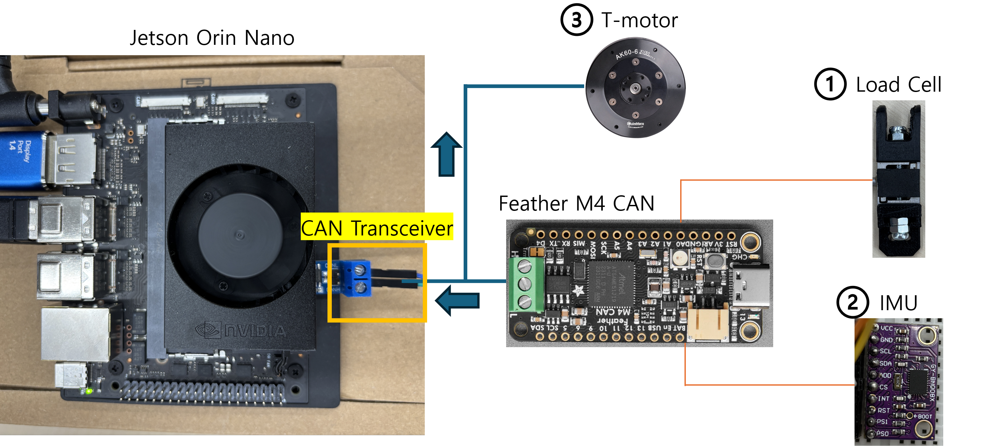
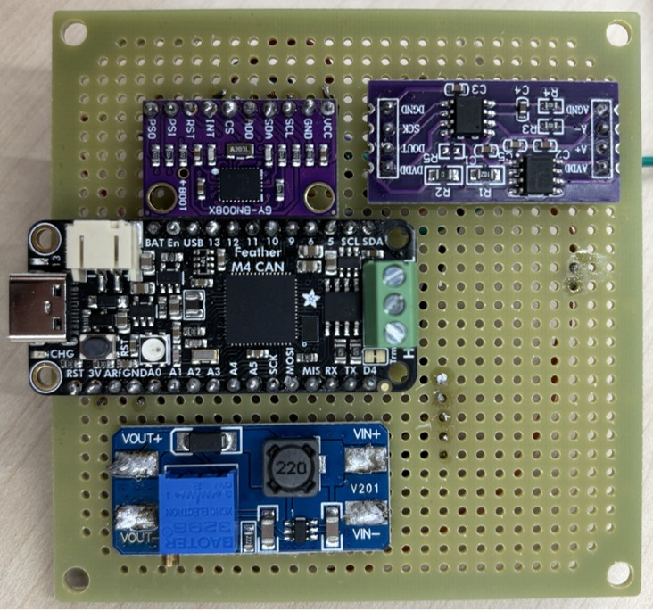
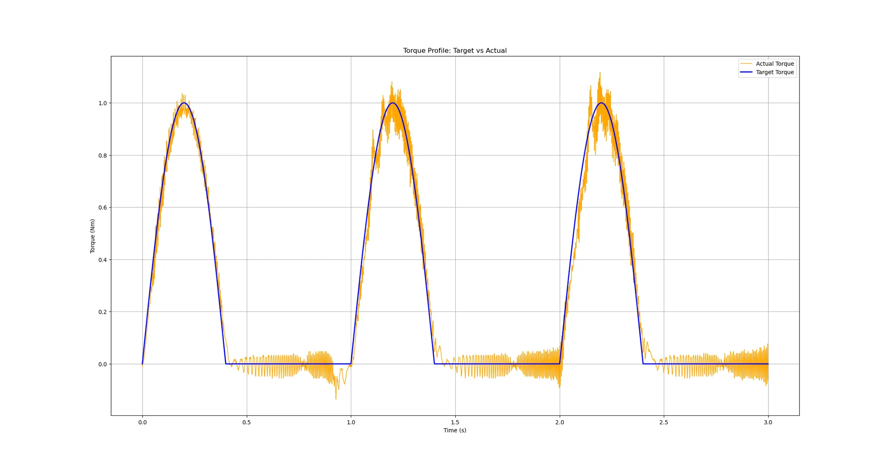
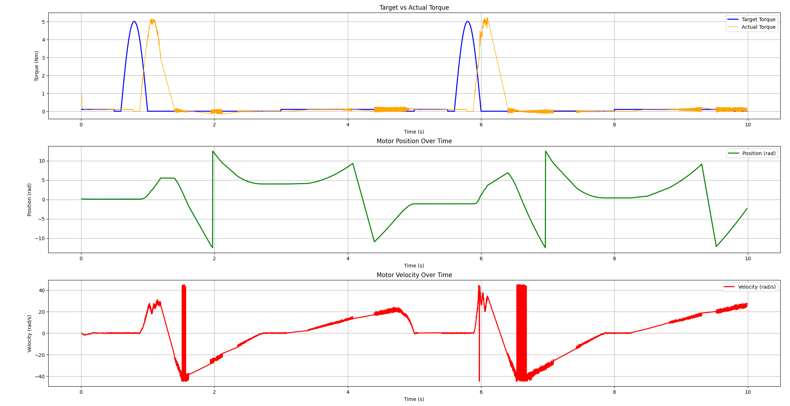
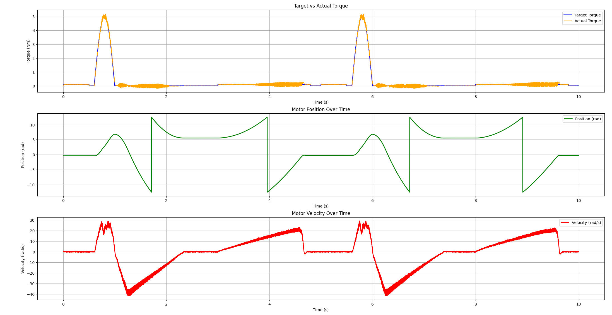
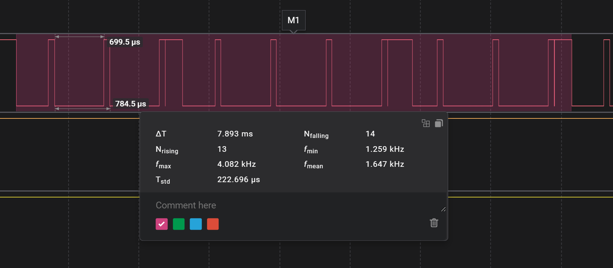

Embedded Controller for a Tendon-Driven Soft Exosuit
Wearable Robotics / Embedded Control / Sensor Integration
Overview
At Seoul National University's Wearable Robotics Laboratory, I worked with Prof. Jinsoo Kim on the embedded control infrastructure for a lower-limb, tendon-driven soft exosuit. I established a basic pipeline connecting wearable sensor modules to motor commands, feedback, and data logging on an NVIDIA Jetson Orin Nano.
The pipeline had a 10-ms end-to-end processing time from the sensor module through motor-command generation. Motor response was evaluated separately through feedback measurements, which revealed delays during concurrent sensor communication.

My Contributions
- Developed the Jetson control program, including CAN message decoding, motor commands, and feedback handling.
- Assembled sensor board modules and connected the load cells, IMUs, and motor to the control pipeline.
- Separated sensor reception and data logging from the motor-control loop using asynchronous callbacks, queues, and background threads.
- Ran torque-profile tests and investigated motor feedback timing with sensors connected to the shared CAN bus.
Another student developed the mechanical hardware. My work focused on the controller, sensor modules, and their integration with the motor.
Sensor Modules and Communication
I first tested bidirectional Jetson–Teensy communication using Micro-ROS and UART, then developed a direct Jetson CAN interface for sensor acquisition and motor control. Feather M4 CAN boards handle the sensor interfaces, while the Jetson runs the application and motor-command logic.
The sensor receiver supports two node groups. It decodes load-cell values, orientation quaternions, angular velocity, and acceleration into a shared latest-data state. Distinct CAN identifiers separate the sensor channels and motor feedback.

Control Software and Data Logging
The Python implementation uses SocketCAN for communication. An asynchronous receiver decodes sensor messages, and the motor loop packs torque commands into the motor's MIT-format CAN messages. Motor feedback provides position, velocity, torque, temperature, and error status.
Separate queues feed sensor and motor records to background CSV writers. This lets the control program enqueue timestamped records without writing each row directly in the motor loop. The logs retain the commanded torque alongside the received motor state for comparison.
The motor experiments also used a 1-kHz scheduling target. This setting is distinct from the 10-ms end-to-end sensor-to-command processing time and does not establish the physical motor's response time.
Torque-Profile Bench Tests
I used periodic torque commands to test the basic motor-control pipeline. An initial test applied a sinusoidal pulse during the first 40% of each one-second cycle, followed by zero commanded torque. The peak command was 1 Nm, and the run lasted 3 seconds.

Later tests used 5-Nm peak commands, a 5-second cycle, and a 10-second run. I compared feedback with the IMU connected and disconnected while disabling data saving in the control program. This helped separate the effect of sensor traffic from file-writing work.


Outcome and Further Work
The project established the basic sensor-to-motor pipeline, including sensor modules, CAN communication, torque commands, feedback decoding, and concurrent logging. Timing checks combined application logs with a logic analyzer to inspect sensor transmission intervals.

Motor response delay remained an integration issue. Further work includes optimizing sensor traffic and control timing before adding gait-phase estimation and evaluating assistance during walking.
Skills
Wearable Robotics Jetson Orin Nano Python SocketCAN CAN Communication Multithreading Sensor Integration Motor Control